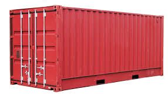
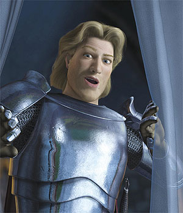

The Linux container engine
Iniciemos con un cuento...
En un reino muy lejano tenían un problema...
Iniciemos con un cuento...
todos en el reino querían transportar desde inocentes animalitos...
Iniciemos con un cuento...
hasta destructores estelares.
Pero nadie sabía como.
Iniciemos con un cuento...
El rey estaba desesperado, porque no sabía como llegarían
los destructores estelares que compró por Mercado libre,
ya que UPS no llegaba hasta su reino, y FedEx llegaba solamente mediante el uso de mulas.
Pero que llegó el apuesto principe...

Iniciemos con un cuento...
El principe les dijo que usando contenedores estandar podrian facilmente
transportar sus naves, ya fuera en camiones, barcos, burros
o incluso la Death Star, y que transportarlos, cambiar de transporte y guardarlos seria muy facil.
Problema resuelto...
Vamonos al Sume para celebrarlo.
The Linux container engine
¿Que es docker?
- Un proyecto Open-Source que busca crear contenedores ligeros y autosuficientes de cualquier aplicacion.
- El mismo contenedor con el que el programador trabaja y testea en su laptop, puede correr en produccion.
- Puede ejecutarse en una VM, bare metal, clusters, nubes publicas, etc.
Instalación
- Como son varias cosillas, les recomiendo que visiten https://www.docker.io/gettingstarted/. ¿Porque?
- Kernel v3.8
- Iptables v1.4+
- Git 1.7+
- Procps/ps
- XZ Utils v4.9+
- Tener una jerarquía de cgroupfs instalada apropiadamente.
WTF is this? Un mecanismo de control del kernel y uso de sus recursos en grupos de tareas. - Si usas DigitalOcean, ya tiene un droplet con ubuntu y docker preinstalado
- Yo baje un binario xD
Varia un poco por las dependencias del sistema.
Primeros pasos...
./docker -d &"
./docker run ubuntu "/bin/echo hello world"
- Iniciamos el demonio docker.
- Descargo una imagen base del Docker Index
- Se le asignó un sistema de archivos
- Se le montó una capa de lectura/escritura
- Se le asignó una interfas de red
- Se le asignó una IP, para eso de la NAT
- Se ejecuto el proceso que le pedi
- Se mostró el resultado en nustra terminal.
¿Que paso?
No es una virtualizacion mas...
- Los procesos comparten el kernel del host
- No hay emulacion de dispositivos
- No hay secuencia de booteo
- ¬.¬ no lo alcanze a investigar xD
juay de rito?
- Arquitecturas y plataformas entre Host y contenedores deben coincidir.
- ¿Donde queda la portabilidad?
Preguntas?
Referencias
- https://www.docker.io/gettingstarted/
- https://wiki.debian.org/HowToUpgradeKernel
/